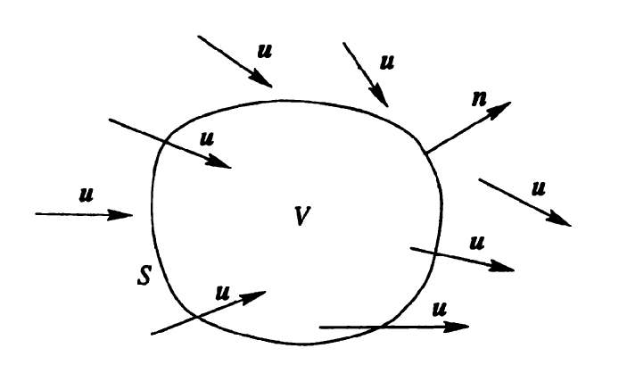

Sıvı Mekaniği
İdeal Gazlar Kanunu (İdeal Gas Law)
Önce bazı terimler. Bir mol (mole) terimi mesela, mol önceden belirli bir molekül sayısıdır. Tutarlı olması için herkesin kabul ettiği bir sayı, özel bir temel parçacığa bağlanmış, bir mol 12 gramlık karbon-12 içindeki atom sayısı [2, sf. 550]. Mole molekül sayısı aynı zamanda ünlü Avagadro sabitidir, $N_A$ ile gösterilir,
$$ N_A = 6.02 x 10^{23} mol^{-1} $$
Yani bir mol içinde üstteki kadar molekül var. Bir materyal içinde kaç mol var hesabı için $n = N / N_A$ kullanabiliriz, $N$ tüm molekül sayısı, $N_A$ bir mol içindeki molekül sayısı, bölüm bize istenen sonucu verir.
Basınç
Peki mikro etkileşimlerden yola çıkarak basınç kavramını türetebilir miyiz acaba? 19'uncu yüzyıl sonlarına doğru bu başarıldı. Basıncın gaz moleküllerinin bir yüzeye çarpmasından ortaya çıktığını hatırlayalım. Bu kuvvet tabii ki Newton kanunundan hareketle,
$$ f = m a = m \frac{\mathrm{d} v}{\mathrm{d} t} $$
Hız $v$'ye molekül içinde olduğu kabın / yüzey duvarına çarptığında ona dik olan hız diyelim [1]. Bu türevi hesaplamak için, ki birim zamanda hız değişimi gerekiyor, kenarları $L$ uzunluğunda bir küp içinde tek bir gaz molekül olduğunu düşünelim.
Basitleştirme amacıyla diyelim ki bu molekül sürekli küp kutu içinde ileri geri gidip geliyor, bir duvara çarpınca bir süre sonra geri geliyor. Bu molekül bir duvara çarptığında $v$ hızında çarptığında (yani $mv$ momentumuyla) elastik olarak geri sekecektir, ve $-v$ ile tam ters yöne geri gitmeye başlayacaktır.

O zaman her çarpışma için hız değişimi $2v$, momentum değişimi ise $2mv$ olur.
Tabii aslında eğer daha genel formülize etmek gerekirse bu çarpışma sırasında $\bar{v}$ hızının duvara dik olan bileşeni $v_x$'yi düşünüyoruz.

Yani momentum değişimi
$$ \Delta p_x = (-m v_x) - (m v_x) = - 2 m v_x $$
Demek ki duvara transfer edilen momentum $2 m v_x$.
Birim zaman $\Delta t$'ye bir molekün iki çarpışma arasında geçen zaman dersek, ve $v_x$ hızında $2L$ yol katedilmişse, $\Delta t = 2 L / v_x$ demektir, ve
$$ F = \frac{\Delta p_x}{\Delta t} = \frac{2 m v_x}{2 L / v_x} = \frac{m v_x^2}{L} $$
Basınç birim alana uygulanan kuvvettir, ve küpün bir kenarının $L^2$ alanında olduğunu düşünürsek,
$$ P = \frac{m v^2}{L^3} = \frac{m v^2}{V} $$
$V$'yi kutunun hacmi olarak aldık, ve $V = L^3$.
Birden fazla molekülü düşünmek istiyoruz şimdi, mesela bir averaj üzerinden.. Fakat her molekül hem negatif hem pozitif yönde aşağı yukarı aynı miktarda hareket yapar (rasgele hareket olduğu için) ve bu tür bir hareket üzerinden averaj almak bizi sıfır değerine götürür. Bu sebeple ortalamasını almadan önce hızların karesini almak istiyoruz,
$$ \bar{v^2} = \frac{v_1^2 + v_2^2 + ... + v_N^2 }{N} = \frac{\sum_i v_i^2}{N} $$
ve ortalama değeri bulmak için $\sqrt{\bar{v^2}}$ kullanıyoruz. Bu hesaba kök kare ortalaması (root mean square -RMS-) ismi de verilir. Şimdi tüm $N$ moleküller üzerinden bir basınç hesaplamak istersek, $N$ tane molekül, ama belli bir anda sadece Kartezyen kordinat sisteminde sadece üç yönden sadece biri yönünde etki var, o zaman $N$ ile çarpıp 3'e bölmek lazım,
$$ P = \frac{N}{3} \frac{m \bar{v^2}}{V} $$
Bu formül içinde bir kinetik enerji formülasyonu görülebiliyor, averaj kinetik enerjiye $\epsilon = m \bar{v^2} / 2$ dersek, üstteki formülü
$$ PV = \frac{N}{3} m \bar{v^2} = \frac{2}{3} N \epsilon $$
olarak yazabiliriz.
Eğer bu formülü sıcaklık içerek şekilde değiştirmek istiyorsak; biliyoruz ki sisteme eklenen her Joule enerji ve bir derece sıcaklık değişimi arasındaki ilişkiyi $k$ sabiti kontrol eder [5, 29-16] bu sabit $k = 1.38 x 10^{23}$ Joule / Kelvin'dir, o zaman enerjiden sıcaklığa geçiş için $kT$ kullanabiliriz, hatta bir $3/2$ eklenerek üstteki 2/3 iptali amaçlanır,
$$ \epsilon = \frac{3}{2} k T $$
Ve,
$$ PV = \left( \frac{2}{3} N \right) \left( \frac{3}{2} k T \right) = N k T $$
Devam edelim, $n = N / N_A$ olduğunu da biliyoruz ki $N_A = 6.02 x 10^{23}$, Avagadro'nun sayısı, $n$ örneklemdeki mol sayısı, $N$ ise örneklemdeki tüm moleküller [2, sf. 550],
$$ PV = n N_A k T $$
Tabii bu bizi $R$ denen bir diğer sabite götürüyor, $R = 8.31 J/mol \cdot K$. Onun $k$ ve $N_A$ ile ilişkisi şöyle,
$$ k = \frac{R}{N_A} $$
O zaman,
$$ PV = n R T $$
İdeal gazlar kanununa erişmiş olduk.
Mol sayısını şöyle ifade edebilirdik,
$$ n = m / w_m $$
ki $m$ gazın kütlesi, $w_m$ ise moleküler ağırlık. Bunları birbirine bölünce doğal olarak mol sayısı ortaya çıkar, $n$'yi iki üstteki formüle koyunca,
$$ PV = \frac{m}{w_m} R T $$
Bir düzenleme yaparsak,
$$ P = \frac{m}{V} \frac{R}{w_m} T $$
$m/V$ yoğunluk, ona $\rho$ diyebiliriz, $R / w_m$ ise evrensel gaz sabiti $R$'nin gazın moleküler ağırlığına bölünmüş hali, ona yeni bir sabit $R_m$ diyebiliriz, o zaman daha öz
$$ P = \rho R_m T $$
formülü elde edilir.
İç Enerji (Internal Energy)
Daha önce görmüştük, tek atomun ortalama hareketsel kinetik enerjisi sıcaklığa bağlıydı, ona daha önce $\epsilon$ demiştik, şimdi $K_{avg}$ diyelim, ki $K_{avg} = 3/2 k T$. O zaman, ve $n$ mol miktarında bir örneklemin içinde $n N_A$ molekül olacağı için, örneklemin iç enerjisi $E_{int}$ şöyle hesaplanabilir [2, sf. 564],
$$ E_{int} = (n N_A) K_{avg} = (n N_A) (\frac{3}{2} k T) $$
Daha önce gördük $k = R/N_A$, üstteki $E_{int}$ içine koyarsak,
$$ E_{int} = \frac{3}{2} n R T $$
Mol Spesifik Isı (Molar Specific Heat of a Gas)
Bir gazın sıcaklık artışına tekabül eden ısı enerjisi (girdisi) faydalı olabilecek bir büyüklüktür, fakat aynı sıcaklık değişimine giden ayrı yollar, farklı ısı hesaplarına sebep verebilir. Değişimin en çok ortaya çıkan iki versiyonu için farklı bir mol spesifik ısı öne sürmek daha iyi olur, bunlardan biri basınç sabit tutulduğu durumdaki, diğeri de hacim sabit tutulduğu durumdaki mol spesifik ısı.
$$ Q = n C_P \Delta T \qquad (2) $$
$$ Q = n C_V \Delta T \qquad (1) $$
Üstteki $C_V$ sabit hacimdeki mol spesifik ısı, $C_P$ sabit basınçtaki.
Sabit hacim durumu için $Q = \Delta E_{int}$, o zaman
$\Delta E_{int} = n C_V \Delta T$
Eğer sıcaklıkta değişim yoksa
$E_{int} = n C_V T$
Bu denklem tüm ideal gazlar için geçerlidir, ideal gaz derken molekülünde birden fazla atom olan gazlar için.
Basınç sabit tutulduğu durumdaki molar spesifik ısıdan hareket ederek bir ilginç formüle daha ulaşabiliriz; Bu durumda ideal gazın sıcaklığını daha önce olduğu gibi ufak $\Delta T$ kadar arttırdığımızı düşünüyoruz, fakat şimdi eklenen enerji hem gazın sıcaklığını arttıracak, hem de iş yapacak, altta görülen pistonu üste itmek gibi (çünkü basınç sabit dedik, hacim sabit demedik).

Erişmek istediğimiz hem $C_P$ hem $C_V$ içeren bir formül bulmak, o zaman Termodinamiğin İlk Kanunu ile başlayalım,
$$ \Delta E_{int} = Q - W $$
$E_{int}$ bir materyelin iç ısısı, ve sadece materyelin o anki iç konumuna bağlı (sıcaklığı, basıncı ve hacmi). $Q$ değişkeni sistemin çevresindekilerle yaptığı ısı alışverisini temsil ediyor, artı değerler materyel ısı çekiyor, negatif ısı veriyor demektir. $W$ ise sistemin yaptığı iş (work). Eğer sistem genişliyorsa mesela iş yapılıyordur, genişleme ya da daralma yoksa $W=0$.
Üstteki formül içine bildiğimiz diğer formülleri koyabiliriz, mesela (1)'i sokarsak,
$$ n C_V \Delta T = Q - W \qquad (5) $$
Yapılan iş $W$ hesaplamak için üstteki resmi düşünelim, alt bölmedeki gaz pistonu yukarı doğru iterek iş yapabilir. Bu işin pistonu $\vec{F}$ kuvvetiyle ve $\mathrm{d} \vec{s}$ kadar sonsuz ufak bir değişime uğrattığını düşünelim. Bu değişim çok ufak olduğu için $\vec{F}$'nin o değişim sırasında sabit olduğunu farz edebiliriz [2, sf. 529]. Bir diğer çıkarsama $\vec{F}$'nin $p A$'ya eşit olduğu - basınç $p$ kuvvet bölü alan $A$ ise aynı $p$ ile $A$'yi çarparsak kuvvete geri geliriz. Diferansiyel yapılan iş
$$ \mathrm{d} W = \vec{F} \cdot \mathrm{d} \vec{s} = (pA) (\mathrm{d} s) = p (A \mathrm{d} s) $$
O zaman $V_i$ ile $V_f$ hacim değişimleri arasında yapılan iş üstteki formülün entegralidir,
$$ W = \int \mathrm{d} W = \int_{V_i}^{V_f} p \mathrm{d} V $$
Bu hesabın detaylarına şimdi girmeyeceğiz, ama baktığımız sabit hacim durumu için üstteki hesap daha basitleşiyor, $W = p \Delta V$. Ayrıca ideal gaz kanunu $pV = n R T$ olduğu için $p \Delta V = n R \Delta T$ de yazılabilir, o zaman $p \Delta V$ yerine $n R \Delta T$ kullanmak mümkün, (5)'e sokarsak,
$$ n C_V \Delta T = Q - n R \Delta T $$
$Q$ ise basınç sabit durumdaki (2) formülünden geliyor zaten,
$$ n C_V \Delta T = n C_P \Delta T - n R \Delta T $$
Her şeyi $n \Delta T$ ile bölersek,
$$ C_V = C_P - R $$
Ya da
$$ C_P - C_V = R \qquad (4) $$
Bir diğer kullanışlı ilginç sabit
$$ \gamma = C_P / C_V \qquad (3) $$
oranıdır. Bu oran, politropik (polytrophic) gazlar denen, sabit hacimdeki durumun enerjisinin hesaplamak için faydalı. Tek bir mol için
$$ E_{int} = C_V T $$
ile başlarsak, ve $T = p / R\rho$ formülünü $T$'ye sokunca [3, sf. 295],
$$ E_{int} = \frac{C_V}{R} \frac{p}{\rho} $$
Gruplamayı bu şekilde yaptık çünkü birazdan $C_V/R$ yerine başka bir formül bulacağız. Devam edelim (3)'ten hareketle $\gamma C_V = C_P$ diyebiliriz. Bu formülü $C_P$ için (4)'ye koyalım,
$$ \gamma C_V - C_V = R \implies C_V(\gamma-1) = R \implies \frac{C_V}{R} = \frac{1}{\gamma-1} $$
Bu sonuç iki üstteki ilk terim ile uyumlu, o zaman
$$ E_{int} = \frac{p}{\rho (\gamma - 1)} $$
Bu form politropik ideal gazların konum formülü (equation of state for an ideal polytropic gas) olarak biliniyor.
Gazlar, Sıvılar, Hava Dinamiği
Süreklilik Denklemi
Farklı noktalarda boyutları farklı olan bir tüp içinde istikrarlı akış içindeki bir sıvının $v$ ve $A$ ifadelerini birbiriyle ilintilendiren bir formül kurmak istiyoruz. Bir $t$ zamanından başlayarak $\Delta t$ kadar süre içindeki tüpün solunda oluşan hacim ve bu hacmi dışarı itmesi gereken, eğer sıvı sıkıştırılamaz ise, sağda eşit bir hacim vardır. Soldan $\Delta V$ girmişse sağdan $\Delta V$ çıkmalıdır.

Genel bağlamda $\Delta x = v \Delta t$ ise,
$$ \Delta V = A \Delta x = A v \Delta t $$
Şimdi tüpün solu ve sağı özelinde,
$$ \Delta V = A_1 v_1 \Delta t = A_2 v_2 \Delta t $$
$$ A_1 v_1 = A_2 v_2 $$
Üsttekine süreklilik denklemi adı veriliyor.
Bu denklemi
$$ R_V = A v = \textrm{sabit} $$
olarak ta yazabiliriz, çünkü süreklilik denklemi herhangi iki nokta için doğru olmalıdır, o zaman üstteki ifade de geçerlidir. $R_V$'ye hacim akış oranı denir.
Ek olarak sıvının yoğunluğu her yerde eşit ise, mesela $\rho$ diyelim, o zaman
$$ R_m = \rho R_v = \rho A v = \textrm{sabit} \qquad (3) $$
sonucuna da varılabilir [9, sf. 399].
Bernoulli Deklemi
İstikrarlı akış halindeki bir sıvıyı düşünelim, alttaki resimdeki gibi yandan görülen bir tüpte / boruda akıyor. Diyelim ki 1. resim ile 2. resim arasında geçen zaman $\Delta t$ ve o zaman içinde koyu mavi olan bölüm kadar sıvı hacmi yer değiştiriyor [8, sf 402].

Bu değişimin tüp sonunda yeşil bölge kadar hacim değişikliğine yol açar diyelim, ve önemli bir nokta iki hacim birbirine eşittir. Eğer 1. resimdeki sıvının girişteki yükseklik, hız, ve basıncı $y_1,v_1,p_1$ ile temsil ediliyorsa, 2. resimde diğer uçtaki $y_2,v_2,p_2$ diyelim, bu değişkenler
$$ p_1 + \frac{1}{2} \rho v_1^2 + \rho g y_1 = p_2 + \frac{1}{2} \rho v_2^2 + \rho g y_2 \qquad (1) $$
formülü ile birbiriyle bağlıdır, ki $\rho$ sıvı yoğunluk sabiti. Üstteki denklemi
$$ p + \frac{1}{2} \rho v^2 + \rho g y = \textrm{bir sabit} \qquad (2) $$
olarak ta yazabiliriz. Bu son formül Bernoulli'nin formülüdür, onun daha yaygın bilinen formudur.
Formüle erişmek için iş-kinetik enerji teorisinden başlayabiliriz,
$$ W = \Delta K $$
Yapılan iş kinetik enerjideki değişime eşittir. Sıvı için kinetik enerji değişimi sıvının tüp başında ve sonundaki hızı ile alakalı olmalıdır [9, sf. 403],
$$ \Delta K = \frac{1}{2} \Delta m v_2^2 - \frac{1}{2} \Delta m v_1^2 $$
ki $\Delta m$ tüpün başında $\Delta t$ anında içeri giren sıvı kütlesi. Onu $\Delta m = \rho \Delta V$ olarak ta yazabiliriz ki $\Delta V$ aynı zaman aralığında giren sıvı hacmi.
$$ = \frac{1}{2} \rho \Delta V(v_2^2 - v_1^2) $$
Şimdi basıncı dahil edelim, bu da bir kuvvet, tüpün başında pozitif iş yapıyor, sonunda içerideki tüm sıvının kütlesi üzerinden ters yönde iş yapıyor, genel olarak
$$ F \Delta x = (pA)(\Delta x) = p(A\Delta x) = p \Delta V $$
denebilir, o zaman baştaki iş $p_1 \Delta V$, sondaki iş $p_2 \Delta V$, toplam
$$ W_p = -p_2 \Delta V + p_1 \Delta V $$
$$ = - (p_2-p_1) \Delta V $$
Yerçekimin yaptığı iş negatiftir, $W_g$ diyelim, kuvvet çarpı yer değişikliği. Kuvvet $\Delta m g$, yer değişikliği $y_2-y_1$.
$$ W_g = -\Delta m g (y_2 - y_1) $$
$$ = -\rho g \Delta V (y_2-y_1) $$
Hepsini bir araya koyarsak, yapılan iş eşittir kinetik enerji değişimi üzerinden,
$$ W = W_g + W_p = \Delta K $$
$$ -\rho g \Delta V(y_2-y_1) - \Delta V(p_2-p_1) = \frac{1}{2} \rho \Delta V(v_2^2 - v_1^2) $$
Tekrar düzenlersek (1)'e erisebiliriz. (2) denklemi (1)'e bakmanın bir diğer yönü, çünkü aslında (2) diyor ki basınç $P$ artı kinetik enerji $\frac{1}{2} \rho v^2$ artı yerçekimsel potansiyel enerji yoğunluğu $\rho g y$'yi tüp akışındaki herhangi iki noktada hesaplarsak birbirlerine eşit olmalılar. O zaman, $p + \frac{1}{2} \rho v^2 + \rho g y$ formülü her noktada aynı olacağına göre bu ifadenin bir sabite eşit olduğu da söylenebiliyor. Yani
$$ p + \frac{1}{2} \rho v^2 + \rho g y = \textrm{bir sabit} $$
oluyor. Diğer bir yönden bakarsak, üstteki formüle bir enerji denklemi de denebilir. Tüm formülü $\rho$ ile bölersek,
$$ \frac{p}{\rho} + \frac{1}{2} v^2 + gh = \textrm{sabit} $$
Buradaki $p / \rho$ basınç enerjisi, $\frac{1}{2}v^2$ kinetik enerji, $gy$ ise potansiyel enerji. Bir sıvı (ya da aerodinamik durumunda hava) ögesi, parçacığı bir tüpte akarken toplam enerjisinin muhafaza eder.
Bir hava taşıtının etrafından akan hava durumunda öğelerin dikey yer değişimi genellikle çok küçüktür o zaman yok sayılabilirler, bu durumda Bernoulli denklemi
$$ p + \frac{1}{2} \rho v^2 = \textrm{sabit} $$
formuna indirgenebilir [7, sf 97]. $\frac{1}{2}\rho v^2$ terimine dinamik basınç (dynamic pressure) ismi de veriliyor, bu terim birim hacimdeki ve $\rho$ yoğunluğundaki havaya $v$'ye hızlandırılınca eklenen kinetik enerjiyi temsil ediyor.
Basınç Katsayısı (Pressure Coefficient)
Aerodinamikte bazı öğeleri tekil boyutsuz sayılara indirgemek faydalı olabiliyor. Mesela eğer bir kanat kesidi (airfoil) etrafındaki havanın kesite nasıl basınç uyguladığına bakıyorsak, basınç katsayısı $C_p$ burada faydalı olabiliyor, örnek için [9], $C_p$'yi şöyle tanımlıyoruz,
$$ C_p \equiv \frac{p - p_\infty}{\frac{1}{2} \rho_\infty v_\infty^2} $$
ki $p_\infty$ incelenen parçanın dışında kalan havanın normal basıncı, $v_\infty$ hızı, $\rho_\infty$ ise o havanın yoğunluğu.
Denkleme yakından bakarsak olabilecek en az $v=0$ ile $C_p$'nin olabileceği en büyük değer 1'dir. Akışın olmadığı noktaları tıkanıklık bölgeleri (stagnation point) ismi verilir. Akışın $p < p_\infty$ bölgelerinde ise $C_p$ negatif olacaktır.
Helikopter
Bir helikopterin pervanesi dönerken üstteki hava parçacıklarını alıp aşağı doğru iter. Olanları sanki bir tüp içinde sıvı akışıymış gibi görebiliriz, ama ufak bir fark var, altta dikey çizgiyle gösterilen (yandan bakış) pervane sıvıya, daha doğrusu havaya bir enerji ekler.

Bu sebeple bir enerji hesabı yapmak istiyorsak Bernoulli denklemini iki bölgeye ayrı ayrı uygulamamız gerekir. Pervane öncesi, ve sonrası [8, sf. 66].
$$ p_0 + \frac{1}{2} \rho V^2 = p_1 + \frac{1}{2} \rho V_0^2 $$
Ve
$$ p_2 + \frac{1}{2} \rho V_0^2 = p_0 + \frac{1}{2} \rho V_s^2 $$
Değişkenlerin ne olduğunu açıklamak gerekirse pervane diskine girmeden önce hava heryerde birörnek $V$ hızında ve $p_0$ basıncına sahip. Diske yaklaştığında hava $V_0$ hızına getiriliyor ve basıncı $p_1$'e düşüyor. Disk üzerinde onun uyguladığı enerji ile basınç $p_2$'ye arttırılıyor ama süreklilik bağlamında hızının çok fazla artışı mümkün değil. Disk arkasında, tüpün ikinci bölümünde hava genişliyor, basınç $p_0$'ye dönüyor, bu noktada hızı $V_s$.
Şimdi üstteki denklemleri şu şekilde yazarsak,
$$ p_1 + \frac{1}{2} \rho V_0^2 = p_0 + \frac{1}{2} \rho V^2 $$
$$ p_2 + \frac{1}{2} \rho V_0^2 = p_0 + \frac{1}{2} \rho V_s^2 $$
ve bir üstteki denklemi iki üstteki denklemden çıkartırsak,
$$ \left(p_2 + \frac{1}{2} \rho V_0^2 \right) - \left(p_1 + \frac{1}{2} \rho V_0^2 \right) = \left(p_0 + \frac{1}{2} \rho V_s^2 \right) - \left(p_0 + \frac{1}{2} \rho V^2 \right) $$
Basitleştirince,
$$ p_2 - p_1 = \frac{1}{2} \rho (V_s^2 - V^2) \qquad (4) $$
Devam edelim, daha önce (3)'te gördük ki, eğer alan için $S$, hız için $V_0$ kullanırsak,
$$ R_m = \rho S V_0 $$
Momentum kütle çarpı hızdır, momentum artışı ise diske giren kütle artış oranı çarpı hız olarak temsil edilebilir, o zaman biraz önce gördüğümüz $V_s-V$ hız artışının ima ettiği momentum artışı üstteki eşitliğin sol tarafında $R_m (V_s - V)$. Tüm formüle uygulayınca
$$ R_m (V_s - V) = \rho S V_0 (V_s - V) $$
Üstteki eşitliğin sol tarafına itiş kuvveti (thrust) de denebilir. Yani $T$,
$$ T = \rho S V_0 (V_s - V) $$
olur. Değişik bir açıdan bakarsak itiş $T$ diskin iki tarafındaki basınç farkından da hesaplanabilir, basınç çarpı alan eşittir kuvvet üzerinden,
$$ T = S (p_2 - p_1) $$
Şimdi (4)'e dönelim. Eğer (4)'daki ifadeyi üstteki formüle $p_2-p_1$'den sokarsak, ve her iki $T$'yi birbirine eşitlersek,
$$ \frac{1}{2} \rho S (V_s^2 - V^2) = \rho S V_0 (V_s - V) $$
Basitleştirmek için
$$ \frac{1}{2} \rho S (V_s - V)(V_s + V) = \rho S V_0 (V_s - V) $$
$$
V_0 = \frac{1}{2} (V_s + V)
\qquad (5)
$$
Helikopter Asılı Dururken
$W$ ağırlığındaki bir helikopterin askıda kalması için ne kadar güç gerekir? Bir helikopterin askıda kalması için onun ağırlığına eş büyüklükte bir itiş kuvveti olmalı. 1'inci itiş formülünden hareketle
$$ W = T = \rho S V_0 (V_s - V) $$
Hareket ettirilen hava hızı $V = 0$ olacak, pervane alanı dışında kalan havanın hızını yok sayıyoruz.
Bu durumda, ve pervane alanı $A$ diyerek
$$ W = \rho A V_0 V_s $$
Diğer yandan (5)'i alırsak, ve $V=0$,
$$ V_0 = \frac{1}{2} V_s $$
Ya da
$$ V_s = 2 V_0 $$
Bunu alıp $W$ formülüne sokalım,
$$ W = 2 \rho A V_0^2 $$
Ya da
$$ V_0 = \sqrt{W / 2 \rho A} \qquad (6) $$
Şimdi uygulananması gereken gücü düşünelim, güç tanımı birim zamandaki enerji aktarımıdır. Enerji nedir? Üstteki durumda enerji kinetik enerjidir. Birim zamanda hız pervane dışında $V$, enerji ise $\frac{1}{2}V^2$, pervane enerji eklemesi sonucu $\frac{1}{2} V_s^2$. Yani enerji eklemesi $1/2(V_s^2 - V^2)$. Birim zamandaki kütle farkı $R_m = \rho S V_0$ demiştik, hepsini bir araya koyarsak,
$$ P = R_E = \rho S V_0 \frac{1}{2} (V_s^2 - V^2) $$
Bu formül birim zamandaki havanın kinetik enerjisindeki artışı gösteriyor, yani uygulanacak güç $P$'yi gösteriyor. Basitleştirelim, $V=0$ olacak, $V_s = 2 V_0$, alan $S=A$,
$$ = \rho A V_0^3 \frac{1}{2} 2^2 V_0^2 $$
$$ = 2 \rho A V_0^3 $$
(6)'daki $V_0$'yu buraya sokarsak,
$$ = 2 \rho A \left( \frac{W}{ 2 \rho A} \right)^{3/2} $$
$$ P = \sqrt{ \frac{W^3}{2 \rho A} } $$
ki $\rho$ standart deniz seviyesi hava yoğunluğu. Demek ki diske uygulanması gereken güç budur.
Dikkat; üstteki hesaplar uygulanan gücün tamamının pervaneye aktarılabildiğini varsayıyor. Pratikte bu doğru olmayabilir, pervane şekli, ve diğer sebeplerden uygulanan güçte kayıp olabilir. Hesaplar idealize ortamdaki hesaplardır yani, kabaca akıl yürütmek için faydalıdır. İyi bir başlangıç noktası olacaklardır.
Örnek
Bir helikopter düşünelim, ağırlığı $W = 24000$ Newton olsun, disk alanı $A = 176.7$ $m^2$. Deniz seviyesi hava yoğunluğu $\rho = 1.226$ $kg \cdot m^{-3}$ üzerinden helikopteri havada tutmak için gereken güç nedir?
rho0 = 1.226
W = 24000
A = 176.7
print ( np.sqrt( W**3 / (2 * rho0 * A) ), 'Watt' )
178623.4013246838 Watt
Birimlerin doğru olduğunu kontrol edebilirsiniz. Newton $kg \cdot m \cdot s^{-2}$, Joule $kg \cdot m^2 \cdot s^{-2}$. Üstteki hesaplar $kg \cdot m \cdot s^{-3}$ verecek, yani Joule / saniye, yani enerji bölü saniye ki bu da Watt tanımı.
Örnek
Ufak bir helikopter düşünelim, ağırlığı $W = 1.22$ kg olsun, disk alanı $A = 0.18$ $m^2$. Helikopteri havada tutmak için gereken güç nedir?
Dikkat kg verildi, ama Newton lazım, önce $9.8 m \cdot s^{-2}$ ile çarpmak gerekli.
rho0 = 1.226
W = 1.22*9.8
A = 0.18
print ( np.sqrt( W**3 / (2 * rho0 * A) ) )
62.22750295064798
Örnek
100 kg yükü 3 $m$ pervane yarıçapı ile taşımak için ne kadar güç gerekir?
rho0 = 1.226
W = 100 * 9.8
r = 3.0
A = np.pi * r**2
print ( np.sqrt( W**3 / (2 * rho0 * A) ), 'Watt' )
3684.5350274555626 Watt
Euler ve Lagrange, Materyel Türev
Euler ve Lagrange bakış açısı arasındaki farklarla başlayalım. Bu iki bakış açısı bir sıvının dinamiğini nasıl incelediğimiz ile alakalı. Eğer bir nehirdeki kirlilik yoğunluğunu ölçüyorsak mesela, bunu herhangi bir $x,y,z$ noktasında yapabiliriz, ve diyelim ki kirlilik belli bir yerde hiç değişmiyor, ertesi gün gelsek aynı yerde aynı ölçümü alıyoruz [11, sf 78]. Bu yere bağımlı Euler açısı.
Fakat farklı yerlerde farklı ölçümler olabilir, mesela nehir boyunca bir kayık içinde sabit hızda gidersek yoğunluk lineer oranda artıyor. Bu durumda pir paket sıvıyı takip ettiğimizi düşünebiliriz, o paketin açısından elde edilen ölçümler Lagrange bakış açısıdır.
İki bakış açısı arasında gidip gelmenin yolu materyel türev. Böylece Euler bazındaki değişim kullanılarak Lagrange tarifi yapılabiliyor. Bu önemli çünkü ölçümler çoğunlukla Euler formatında düşünülür (bir yerde duran ölçüm aleti idare etmesi ve temsili daha rahat bir kavramdır), ayrıca matematik Euler ortamında biraz daha kolay manipüle edilebilir hale geliyor [12].
Lagrange ile bir parçacık hayal ediyoruz, onu tanımlamanın bir yolu $t=0$ anında nerede olduğu. Daha sonra bu başlangıç noktasındaki sıvı paketinin hangi yolu takip ettiğini $\bar{r}(t)$ ile tarif ediyoruz, ki $\bar{r}(t)$ parametrik bir eğri olarak alabiliriz, $r = ( x(t), y(t), z(t) )$. Eğer bir başlangıç noktasını $a$ olarak tanımlarsak bu başlangıcın ve yol denkleminin bir parçacığı tarif ettiğini düşünebiliriz,

Herhangi bir ölçümü alalım [13], biraz önce kirlilik örneği verdik, bu sıcaklık ta olabilirdi, ölçüm $F(t,x,y,z)$ olsun, $t$ anında ve $x,y,z$ noktasında yapılan ölçüm, bu ölçüme Calculus'un Zincirleme Kuralını uygularsak, değişim oranını materyel türev $D F / Dt$'yi nasıl elde edebileceğimizi görebiliriz,
$$ \frac{D F}{D t} = \frac{\partial F}{\partial t} + \frac{\partial F}{\partial x} \frac{\partial x}{\partial t} + \frac{\partial F}{\partial y} \frac{\partial y}{\partial t} + \frac{\partial F}{\partial z} \frac{\partial z}{\partial t} $$
$(\frac{\partial x}{\partial t}, \frac{\partial y}{\partial t},\frac{\partial z}{\partial t})$ hız olarak görülebilir, ona $\bar{u} = (u,v,w)$ vektörü diyelim,
$$ \frac{D F}{D t} = \frac{\partial F}{\partial t} + \frac{\partial F}{\partial x} u + \frac{\partial F}{\partial y} v + \frac{\partial F}{\partial z} w $$
Ayrica $(\frac{\partial F}{\partial x},\frac{\partial F}{\partial y},\frac{\partial F}{\partial z})$ gradyan vektoru $\nabla F$,
$$ \frac{\partial F}{\partial t} + \bar{u} \cdot \nabla F $$
Burada $\frac{\partial F}{\partial t}$ ölçülen $F$'nin tek, sabit bir yerde zamana göre değişimidir. Bu terime yapılan ekler hareket halindeki parçanın ek olarak göreceği ölçüm değişim oranı olacaktır.
Alınan türev bir operatör olarak görülebilir,
$$ \frac{D ()}{D t} = \frac{\partial () }{\partial t} + \bar{u} \cdot \nabla () $$
Üzerinde operatör uygulanan $()$ içine gider, $F$ için
$$ \frac{D F}{D t} = \frac{\partial F}{\partial t} + \bar{u} \cdot \nabla F $$
ile önceki formüle eriştik.
Şimdi ilginç bir noktaya geldik, süreklilik denklemi (1)'i, $\rho$ ölçümü üzerinde materyel türev uygulanmış formu olarak görmek mümkün,
$$ \frac{D \rho}{D t} + \rho \nabla \cdot \bar{u} = 0 $$
İlginç bir diğer bakış açısı Anderson kitabından [16, sf. 43]. Hız $x,y,z$ noktasında $t$ anındaki $u,v,w$ hız vektörü
$$ u = u(x,y,z,t) $$
$$ v = u(x,y,z,t) $$
$$ w = u(x,y,z,t) $$
ile gösteriliyor olsun, ve bu nokta ve zamandaki yoğunluk $\rho$ ise
$$ \rho = \rho(x,y,z,t) $$
Ufak sıvı hacimlerine bakıyoruz, ve $t_1$ anında 1 noktasındaki öğenin yoğunluğu
$$ \rho_1 = \rho(x_1,y_1,z_1,t_1) $$

Daha sonraki bir $t_2$ anında aynı sıvı öğesi 2 noktasına gitti diyelim, bu noktada yoğunluk
$$ \rho_2 = \rho(x_2,y_2,z_2,t_2) $$
Şimdi 1 noktası etrafında 2 noktasına doğru bir Taylor açılımı yapabiliriz, yüksek dereceli diğer terimler (high-order terms) HOT ile belirterek,
$$ \rho_2 = \rho_1 + \left( \frac{\partial \rho}{\partial x} \right)_1 (x_2-x_1) + \left( \frac{\partial \rho}{\partial y} \right)_1 (y_2-y_1) + \left( \frac{\partial \rho}{\partial z} \right)_1 (z_2-z_1) + \left( \frac{\partial \rho}{\partial t} \right)_1 (t_2-t_1) + HOT $$
$\rho_1$ terimini sol tarafa geçirip her sey $t_2-t_1$ ile bolersek ve HOT'yi yoksayarsak,
$$ \frac{\rho_2-\rho_1}{t_2-t_1} = \left( \frac{\partial \rho}{\partial x} \right)_1 \frac{(x_2-x_1)}{t_2-t_1} + \left( \frac{\partial \rho}{\partial y} \right)_1 \frac{(y_2-y_1)}{t_2-t_1} + \left( \frac{\partial \rho}{\partial z} \right)_1 \frac{(z_2-z_1)}{t_2-t_1} + \left( \frac{\partial \rho}{\partial t} \right)_1 \qquad (3) $$
Eşitliğin sol tarafına dikkat edersek bu sıvının 1 noktasından 2 noktasına giderken deneyimlediği zamanda ortalama değişim değil midir? Limite giderken yani $t_2$ zamanı $t_1$'e sonsuz yaklaştırılırken,
$$ \lim_{t_2 \to t_1} \frac{\rho_2-\rho_1}{t_2-t_1} = \frac{D\rho}{D t} $$
ki burada $D\rho/D t$ sembolü yoğunluğun 1 noktasından geçerken yaşadığı anlık değişimdir.
Yaygın adlandırma kuralları bu sembole maddi, materyel türev (substantial derivative) $D/Dt$ adını verir. Dikkat edelim $D\rho/Dt$ yoğunluğun sıvı öğesi hareket ederken zamana göre değişim oranıdır. Gözlerimiz o sıvı paketine kitlenmiş durumdadır, onu izlemekteyiz, ve 1 noktasında geçerken onun yoğunluğunun değişimini raporlamak istiyoruz. Bu rapor $(\partial \rho / \partial t)_1$'den farklı, burada sabit 1 noktasındaki yoğunluğun zamana göre değişim oranını raporluyoruz. Bu durumda gözler 1 noktasına kitlenmiş durumda, sadece orada olup bitenlerle ilgileniyoruz.
(3) denklemine dönersek, alttakilerin doğru olduğunu bildiğimize göre,
$$ \lim_{t_2 \to t_1} \frac{x_2 - x_1}{t_2 - t_1} \equiv u $$
$$ \lim_{t_2 \to t_1} \frac{y_2 - y_1}{t_2 - t_1} \equiv v $$
$$ \lim_{t_2 \to t_1} \frac{z_2 - z_1}{t_2 - t_1} \equiv w $$
o zaman (3) denkleminin tamamını $t_2 \to t_1$ ile limite götürdüğümüzde
$$ \frac{D\rho}{D t} = u \frac{\partial \rho}{\partial x} + v \frac{\partial \rho}{\partial y} + w \frac{\partial \rho}{\partial z} + \frac{\partial \rho}{\partial t} $$
ifadesini elde ederiz. Bu ifadeyi genelleştirerek bir operatör haline de getirebiliriz,
$$ \frac{D}{D t} = u \frac{\partial }{\partial x} + v \frac{\partial }{\partial y} + w \frac{\partial }{\partial z} + \frac{\partial \rho}{\partial t} $$
Kütle Muhafazası, Süreklilik Formülü (Continuity Equation)
Ufak bir kutu ya da hacim ögesi hayal edelim [13, 16 sf. 50, 17 sf. 10, 19 sf. 404, 21 sf 95, 20 sf. 9], kenarları çok küçük $\Delta x$, $\Delta y$, $\Delta z$ boyutlarında, ve bu kutu uzayda sabitlenmiş, içinden sıvı akıyor. Sabitlenmiş bir noktada olanlara baktığımız için bu Euler bakış açısı, detaylarını ileride göreceğiz. Neyse, şimdi sadece $x$ yönündeki kütle değişimine bakalım,
Sıvının akış hızı $u(x,y,z) = (u,v,w)$, ve yoğunluğu $\rho$ olsun. Birim zamanda içeri akan net kütleyi giren eksi çıkan kütle olarak hesaplayacağız. Bu zamanda $x$ yönünde akış kenarları $\Delta y$, $\Delta z$ ve $u(x,y,z)$ (ufak dik duran bir pizza kutusu gibi) olan bir kesit düşünebilir. Bu birim zamandaki akış hacmi. Onu yoğunluk ile çarpınca kütle elde edilir, aynı şeyi $x + \Delta x$ noktası için de yaparız, ve farklarını alırız,
$$ \rho(x,y,z)u(x,y,z)\Delta y \Delta z - \rho(x+\Delta x,y,z) u(x+\Delta x,y,z)\Delta y \Delta z $$
Üstteki formüldeki bir bölüm bir kısmi türevi andırıyor, $\Delta x$ ile bölüp çarpsak,
$$ = \frac{\rho(x,y,z)u(x,y,z)}{\Delta x}\Delta x \Delta y \Delta z - \frac{\rho(x+\Delta x,y,z) u(x+\Delta x,y,z)}{\Delta x} \Delta x \Delta y \Delta z $$
Evet iki bölme işlemini yaklaşıksal kısmi türev olarak görebiliriz,
$$ \approx -\frac{\partial (\rho u) }{\partial x} \Delta x \Delta y \Delta z $$
Benzer işlemi tüm eksenler için ayrı ayrı yapsak onlar için de kısmi türevler elde ederdik, o zaman tüm eksenler üzerinden olan değişim, ve farksal hacmi $\Delta V = \Delta x \Delta y \Delta z$ olarak göstererek,
$$ \left( -\frac{\partial (\rho u) }{\partial x} -\frac{\partial (\rho u) }{\partial y} -\frac{\partial (\rho u) }{\partial z} \right) \Delta V $$
Üstteki gradyan vektörsel olarak daha rahat ifade edilebilir,
$$ = -\nabla \cdot (\rho \bar{u} ) \Delta V $$
Birim zamandaki kütle artışı buna eşit. Üstteki ifadeyi farklı bir açıdan, birim zamandaki kütle (yoğunluk çarpı hacim) artışı olarak, şöyle de belirtebilirdik,
$$ \frac{\partial }{\partial t} (\rho \Delta V) $$
Bu formül iki üstteki formül ile eşit olmalı. Ayrıca her iki tarafta $\Delta V$ var, çıkartılabilir, zaten sabit bir hacim, sonuç,
$$ \frac{\partial \rho}{\partial t} = -\nabla \cdot (\rho \bar{u} ) $$
Literatürde çoğunlukla şu formda gösterilir,
$$ \frac{\partial \rho}{\partial t} + \nabla \cdot (\rho \bar{u} ) = 0 \qquad (1) $$
Bu denkleme süreklilik formülü (continuity equation) ya da kütle muhafaza kanunu (mass convervation law) ismi veriliyor.
Bilinen Vektör Calculus eşitliğinden hareketle
$$ \frac{\partial \rho}{\partial t} + \bar{u} \cdot \nabla \rho + \rho \cdot \nabla \bar{u} = 0 $$
Eğer bir sıvı sıkıştırılamaz (incompressible) ise, ki pek çok sıvı dinamiği simülasyonlarında böyle olduğu kabul edilir, o zaman $\rho = sabit$ demektir, $\frac{\partial \rho}{\partial t} = 0 $ olur, değişim yok, süreklilik formülünden geri kalan
$$ \nabla \cdot \bar{u} = 0 \qquad (2) $$
olacaktır. $\nabla \cdot$ sembolünün uzaklaşım, ya da $\mathrm{div}$ olduğunu hatırlayalım, ve uzaklaşım yaklaşık olarak bir bölgeye giren eksi çıkan akışı gösterir, ve sıkıştırılamaz durumda uzaklaşımın sıfır olması mantıklı.
$\rho \bar{u}$ büyüklüğüne kütle akışı diyebiliriz, kütlenin ne hızla aktığını gösterir. Uzaklaşım, akımın bir bölgede nasıl yayıldığını gösteriyorsa (bazı durumlarda sanki orada bir su / sıvı kaynağı varmış gibi) o zaman süreklilik formülünün fiziksel olarak şunu söylüyor denebilir; bir sıvının bir bölgedeki yoğunluk değişimi o bölgeye giren ve çıkan akımların sonucudur.
Uzaklaşım Teorisi İle Muhafaza Kanunları
Kütle muhafaza kanununa değişik bir yönden erişmek mümkün. $\rho(r, t)$ yoğunluğuna sahip bir sıvı olsun, ve bu sıvının akışını $u(r, t)$ ile temsil ediyoruz, bu bir hız, akış alanı. Şimdi uzayda sabitlenmiş rasgele bir $V$ hacmi düşünelim, yüzeyi $S$ ve her noktadaki normali $n$, ki $r,n$ vektör değerleri. O zaman $V$ içindeki sıvının toplam kütlesi $\rho$'nun entegrali olacaktır [14, sf. 86],

$$ V \textrm{ içindeki kütle} = \iiint_V \rho \mathrm{d} v $$
Kütlenin bu hacme giriş oranı nedir? Bu oran akış ve hacmin yüzeyi üzerinden bir yüzey entegrali olmalı,
$$ V \textrm{ hacmine kütle giriş oranı} = - \iint_S \rho u \cdot n \mathrm{d} S $$
Eksi işareti var çünkü normal yüzeyden dışarı doğru işaret ediyor.
Şimdi kütlenin muhafaza edilme fiziksel şartını uyguluyabiliriz. $V$ içindeki kütle değişim oranı kütlenin $V$'ye giriş oranına eşit olmalı diyoruz. İlk ifade için kütle hesabının zaman üzerinden türevini alıyoruz, ve ikinci ifadeye eşitliyoruz,
$$ \frac{\mathrm{d}}{\mathrm{d} t} \iiint_V \rho \mathrm{d} V = - \iint_S \rho u \cdot n \mathrm{d} S $$
Uzaklaşım Teorisi ile eşitliğin sağındaki yüzey entegrali bir hacim entegraline çevirilebilir. Ayrıca eşitliğin solundaki türev ve entegral sırası arasında değiş tokuş olabilir,
$$ \iiint_V \frac{\partial \rho}{\partial t} \mathrm{d} V = - \iiint_V \nabla \cdot (\rho u ) \mathrm{d} V $$
Türev entegral içine geçince bir kısmi türev haline geldi çünkü $\rho$ hem zaman hem yere bağımlı bir fonksiyondur.
Üstteki iki entegral artık birleştirilebilir,
$$ \iiint_V \frac{\partial \rho}{\partial t} + \nabla \cdot (\rho u ) \mathrm{d} V = 0 $$
Dikkat edersek bu hesap $V$ üzerinde hiçbir kısıtlama konulmadan elde edildi, bu sebeple herhangi bir $V$ için doğru olacaktır. O zaman üstteki ifadenin, yani entegralin sıfıra eşit olmasının doğru olması için entegral içindeki terim sıfır olmalıdır, yani
$$ \frac{\partial \rho}{\partial t} + \nabla \cdot (\rho u ) = 0 $$
Not: Muhakkak entegre edilen şey her yerde sıfır olmasa bile entegral hesabının sıfır sonucu verdiği durumlar vardır. Mesela $\sin x$'i 0 ile $2\pi$ arasında entegre etmek gibi, fonksiyon bazen negatif, bazen pozitif, her iki kısım dengeli ve entegral sıfır [11, sf. 63]. Fakat üstte belirttiğimiz gibi entegral aldığımız alan $V$ rasgele seçildi. Bu hacmi büyük, küçük, seçebilirdim, başka bir yere taşıyabilirdim. Bu durum için entegralin her zaman sıfır vermesinin tek yolu entegrali alınan şeyin sıfır olmasıdır. Ya da bir çelişki ile ispat argümanı kullanırsak, eğer entegrali alınan ifadenin sıfır olmadığı bir yer olsaydı, hacmi onun etrafına odaklayarak üstteki eşitliğe ters düşebilirdim. O zaman entegre edilen her yerde sıfır olmalı.
Muhafaza Kanunları Tek Boyut
İçinde gaz olan sadece tek boyutuna baktığımız bir tüp düşünelim, $x$ tüpün üzerindeki bir noktayı temsil edecek, $\rho(x,t)$ ise tüpün $x$ noktasında ve $t$ anındaki yoğunluğunu verecek diyelim. Yoğunluğu kullanarak $x_1$ ve $x_2$ noktaları arasındaki $t$ anındaki kütle
$$ \int_{x_1}^{x_2} \rho(x,t) \mathrm{d} x $$
ile hesaplanabilir. Tüpün duvarları tam izole ise ve kütle yoktan varedilip yokedilemeyeceğine göre tüpe gaz giriş ya da çıkış sadece $x_1,x_2$ noktalarından olabilir [26, sf. 14]. Şimdi bir gaz hareket hızı düşünelim, $u(x,t)$ ile, o zaman gaz akma oranı, ya da akış (flux)
$$ flux = \rho(x,t) u(x,t) $$
olur. Üstteki fiziksel kurallardan hareketle $[x_1,x_2]$ deki kütlenin değişim oranı $x_1$ ve $x_2$ noktalarındaki akışın farkına eşit olmalıdır,
$$ \frac{\mathrm{d}}{\mathrm{d} t} \int_{x_1}^{x_2} \rho(x,t) \mathrm{d} x = \rho(x_1,t) u(x_1,t) - \rho(x_2,t) u(x_2,t) $$
İşte bu muhafaza kanununun entegral formudur.
Üstteki formülü $t_1,t_2$ zaman aralığı için entegre edersek, ki böylece bu zaman içindeki tüm toplam akışı hesaplayabilelim, o zaman
$$ \int_{t_1}^{t_2} \left( \frac{\mathrm{d}}{\mathrm{d} t} \int_{x_1}^{x_2} \rho(x,t) \mathrm{d} x \right) = \int_{t_1}^{t_2} \rho(x_1,t) u(x_1,t) \mathrm{d} t - \int_{t_1}^{t_2} \rho(x_2,t) u(x_2,t) \mathrm{d} t $$
Soldaki kısım zaman üzerinden türevin yine zaman üzerinden entegrali, o zaman yokolabilir, Calculus'un Temel Teorisi üzerinden basitleştirirsek,
$$ \int_{x_1}^{x_2} \rho(x,t_2) \mathrm{d} x - \int_{x_1}^{x_2} \rho(x,t_1) \mathrm{d} x = \int_{t_1}^{t_2} \rho(x_1,t) u(x_1,t) \mathrm{d} t - \int_{t_1}^{t_2} \rho(x_2,t) u(x_2,t) \mathrm{d} t $$
Ufak bir yer değiştirme sonrası
$$ \int_{x_1}^{x_2} \rho(x,t_2) \mathrm{d} x = \int_{x_1}^{x_2} \rho(x,t_1) \mathrm{d} x + \int_{t_1}^{t_2} \rho(x_1,t) u(x_1,t) \mathrm{d} t - \int_{t_1}^{t_2} \rho(x_2,t) u(x_2,t) \mathrm{d} t $$
Üstteki formun değişik bir şekli ileride lazım olacak, zaman adımı atmaya uğraştığımız hesapsal yöntemlerde $t_1$ ve $t_2$ üzerinden bir entegral, hesabı bir sonraki zamana geçirmeye uğraştığımızda, adım attığımızda.
Neyse şimdi diferansiyel forma geçise dönelim. Bu noktada $\rho(x,t)$ ve $u(x,t)$'nin türevi alınabilir fonksiyonlar olduğunu farz ediyoruz. Üstekini, yine ufak bir değişim sonrası,
$$ \int_{x_1}^{x_2} \rho(x,t_1) \mathrm{d} x + \int_{x_1}^{x_2} \rho(x,t_2) \mathrm{d} x - \int_{t_1}^{t_2} \rho(x_2,t) u(x_2,t) \mathrm{d} t - \int_{t_1}^{t_2} \rho(x_1,t) u(x_1,t) \mathrm{d} t = 0 \qquad (4) $$
olarak görelim. Eğer Calculus'un Temel Teorisi ile ilk iki terime $\int_{t_1}^{t_2} .. \mathrm{d} / \mathrm{d} t$ son iki terime $\int_{x_1}^{x_2} .. \mathrm{d} / \mathrm{d} x$ ekleyebilirsek, tüm terimlerde aynı entegraller olacağı için, $\int_{t_1}^{t_2} \int_{x_1}^{x_2} $ altında tüm terimleri gruplayıp basitleştirmek mümkün, ve bunlar sıfıra eşit olur. Bu bizi diferansiyel forma götürebilir. Yani
$$ \rho(x,t_2) - \rho(x,t_1) = \int_{t_1}^{t_2} \frac{\partial }{\partial t} \rho(x,t) \mathrm{d} t $$
ve
$$ \rho(x_2,t)u(x_2,t) - \rho(x_1,t)u(x_1,t) = \int_{x_1}^{x_2} \frac{\partial }{\partial x} (\rho(x,t)u(x,t)) \mathrm{d} x $$
eşitliklerinden hareketle, bunları (4)'e uygulayıp
$$ \int_{t_1}^{t_2} \int_{x_1}^{x_2} \left\{ \frac{\partial }{\partial t} \rho(x,t) + \frac{\partial }{\partial x} (\rho(x,t)u(x,t)) \right\} \mathrm{d} x \mathrm{d} t = 0 \qquad (5) $$
elde ediyoruz. Bu ifadenin $[x_1,x_2]$ ve $[t_1,t_2]$ arasındaki tüm değerlerde doğru olması gerektiği için entegre edilenin sıfır olması gerekiyor ([5]'dekine benzer bir mantık yürütüldü), yani
$$ \rho_t + (\rho v)_x = 0 $$
olmalı. Böylece kütlenin muhafaza kuralını diferansiyel formda elde etmiş olduk.
Bu formu izole halde çözmenin tek yolu $v$'nin önceden bilindiği durumdadır, ya da $v$ fonksiyon $\rho(x,t)$'ye bağlı bir fonksiyon olmalıdır, yani $f(\rho) = \rho v$ gibi. Bu durumda üstteki ifade $\rho$ için tek sayısal muhafaza kanunu haline gelir,
$$ \rho_t + f(\rho)_x = 0 $$
Diğer Muhafaza Edilen Büyüklükler
Tekrar üzerinden geçip, genişletelim, [28, sf. 15] notasyonu ile devam edelim, ölçmek istediğimiz sıkıştırılamayan bir sıvı, gaz büyüklüğü var, ve bunu $x$ noktasında $t$ anı için $q(x,t)$ ile ölçüyoruz, takip ediyoruz. Mesela sıvı içine bir işaretleyici karıştırılmış, mürekkep gibi, o takip ediliyor. Takip edilen bu ölçümün yoğunluğu $q(x,t)$ olsun, bu fonksiyonun ne olduğunu anlamak istiyoruz. Bu işaretleyicinin $x_1$ ve $x_1$ arasındaki kütlesinin hesabı için
$$ \int_{x_1}^{x_2} q(x,t) \mathrm{d} x $$
hesaplanır. Şimdi akış (flux) kavramını tekrar tanıştıralım, herhangi bir $x$ noktasında ve $t$ anındaki işaretleyici yoğunluğunun akma oranı akistir. Bilinen $u(x,t)$ hızı ve yoğunluk $q(x,t)$'yi çarparak onu elde edebiliriz,
$(x,t)$'deki akış = $u(x,t) q(x,t)$
Dikkat, akış sıfırdan büyükse bu sağa doğru akış demektir, küçükse sola doğru akış demektir. Hız bilinen bir büyüklük olduğuna göre bir akışı $f$'yi $q$'nun fonksiyonu olarak yazabiliriz,
akış = $f(q,x,t) = u(x,t) q$
Şimdi üstteki entegral ile akış formülünü bağlayalım. Kütle muhafaza edildiği için $x_1$ ve $x_2$ arasındaki kütleyi hesaplamıştık hatırlarsak, bu kütlenin zamana göre değişim oranı sadece ve sadece o bölgeye sağdan ve solda olacak akışlar ile mümkündür.
$$ \frac{\mathrm{d}}{\mathrm{d} t} \int_{x_1}^{x_2} q(x,t) \mathrm{d} x = f(q(x_1,t)) - f(q(x_2,t)) $$
Dikkat, $x_2$ üzerindeki akışta eksi işareti var çünkü sağdaki sınırdan sola doğru akışı istiyoruz, ve $x_1$ üzerindeki akışta artı işaret var, çünkü o sınırdan sağa doğru giden, $[x_1,x_2]$ bölgesine giren akışa bakıyoruz.
Üstteki formülün sağ tarafını Calculus'un standart notasyonu ile yazabiliriz,
$$ \frac{\mathrm{d}}{\mathrm{d} t} \int_{x_1}^{x_2} q(x,t) \mathrm{d} x = -f(q(x_1,t)) \biggr\rvert_{x_1}^{x_2} $$
Calculus'a geçtiğimize göre sağ tarafı Calculus'un Temel Teorisi üzerinden türevin entegrali haline çevirebiliriz,
$$ \frac{\mathrm{d}}{\mathrm{d} t} \int_{x_1}^{x_2} q(x,t) \mathrm{d} x = - \int_{x_1}^{x_2} \frac{\partial }{\partial x} f(q(x,t)) \mathrm{d} x $$
Şimdi zaman türevini entegral içine alabiliriz. Ayrıca eşitliğin sol ve sağ kısmı aynı entegrale sahip oldukları için onları birleştirmek mümkün,
$$ \int_{x_1}^{x_2} \left[ \frac{\mathrm{d}}{\mathrm{d} t} q(x,t) + \frac{\partial }{\partial x} f(q(x,t)) \right] \mathrm{d} x = 0 $$
Daha önce (5) formülü için kullandığımız mantık geçerli, o zaman entegre edilen sıfır olmalı, böylece alttaki diferansiyel denklemi elde ediyoruz,
$$ \frac{\mathrm{d}}{\mathrm{d} t} q(x,t) + \frac{\partial }{\partial x} f(q(x,t)) = 0 $$
Ya da
$$ q_t(x,t) + f(q(x,t))_x = 0 $$
Aynen kütle muhafaza edildiği gibi momentum da muhafaza edilebilir. Bu durumda $\rho(x,t) u(x,t)$ bir momentum yoğunluğu verir, ki $\rho$ kütle yoğunluğu, ve $\rho u$ çarpımının iki nokta arasındaki entegrali o aralıktaki toplam momentumu hesaplar, ve bu toplam sadece o aralığa sınırlardan girecek hareket eden sıvıyla gelecek dış momentumlar ile değisebilir. Eğer $q = \rho u$ ise akış $(\rho u) u = \rho u^2$ ile hesaplanır.
Fakat momentum hesabına etki eden başka faktörler de var. Üstteki makroskopik, büyük ölçekteki bir etkiydi. Mikroskopik bir etki de var. Çünkü düşünürsek eğer gaz hiç hareket etmiyor bile olsaydı, yani makroskopik görünen hız $u=0$ olsaydı, hala gaz içindeki moleküller hareket halinde olurdu [28, sf 292]. Öyle değil mi? Eğer gaz ısısı mutlak sıfır üzerinde ise bir hareket var demektir. İşte bu hareketlilik gaz içinde basınç yaratır. Herhangi bir $x_1$ noktasındaki basıncı anlamak için tek boyutlu tüpümüzün o noktasına bir hayali duvar soktuğumuzu düşünelim ve bu duvarın her iki tarafına gaz tarafından uygulanacak kuvveti (birim alan bazlı olarak) hesaplayalım. Bu kuvvetler normalde aynı mutlak büyüklükte ama ters işaretli olurlar. Fakat tüpün her iki ucunu göz önüne alırsak eğer bu iki uçta basınç farkı var ise bu iç titreşimlerin bir tarafta diğerine göre daha fazla olduğu anlamına gelir ve bu fark bizim baktığımı tüp aralığına momentum eklenmesi olarak yansır.
O zaman momentum akışını $\rho u^2 + p$ olarak hesaplamak gerekir, entegral muhafaza kanunu olarak,
$$ \frac{\mathrm{d}}{\mathrm{d} t} \int_{x_1}^{x_2} \rho(x,t) u(x,t) \mathrm{d} x = - [\rho u^2 + p]_{x_1}^{x_2} $$
Dikkat $[ ... ]_{x_1}^{x_2}$ işlemi ile iki uç arasındaki basınç farkını formüle katmış oluyoruz.
Ve tekrar daha önce gördüğümüz matematiksel işlemleri yine uygularsak, $\rho,u,p$'nin pürüzsüz fonksiyonlar olduğunu varsayarak momentum denkleminin diferansiyel formunu elde edebiliriz,
$$ (\rho u)_t + (\rho u^2 + p)_x = 0 $$
Enerji için de benzer bir taşınma formülü mümkün. $E$ sembolüyle birim hacimdeki enerji yoğunluğunu temsil edelim, bu enerji de gaz akışı içinde taşınacaktır, bu durum makroskopik akış terimi $E u$ sonucunu verir. Ayrıca mikroskopik seviyede basınç $p$'nin yarattığı da kinetik enerjide bir $pu$ akışına sebep olacaktır. Enerji denklemini o zaman,
$$ E_t + [(E + p) u ]_x = 0 $$
ile gösteririz. $E$ ile $p$'nin toplanmış olması garip gelebilir, birisi enerji diğeri kuvvet. Fakat ölçüm birimlerini kontrol etmek gerekirse, $E$ içinde birim hacimdeki enerji tutuluyor, mesela $m^3$ içindeki enerji $N m$, basınç ise tanım itibariyle birim alandaki kuvvettir, yani $N / m^2$. $E$ için o zaman $N m / m^3 = N / m^2$ elde edilir ki bu basıncın birimi ile aynıdır.
Euler Gaz Dinamiği Formülleri
Tüm bu denklemleri biraraya koyunca, Euler Gaz Dinamiği formülleri (Euler Equation of Dynamics) elde edilir.
$$ \left[\begin{array}{c} \rho \\ \rho u \\ E \end{array}\right]_t + \left[\begin{array}{c} \rho u \\ \rho u^2 + p \\ (E+p) u \end{array}\right]_x = 0 $$
Fakat dikkat edersek bu noktada elimizde dört tane değişken var, ama sadece üç tane muhafaza kanunu listelendi. Bu sistemi "kapatmak" için yani dört bilinmeyen için dört denkleme sahip olmak için bir tane daha denkleme ihtiyacımız var. Bu denklem [25]'te işlenen ideal gazların konum formülü olabilir, bu formül basıncın diğer büyüklüklere nasıl bağlı olduğunu gösterir, biz politropik duruma odaklanacağız, $e$ ile baslarsak ([25]'te $E_{int}$),
$$ e = \frac{p}{\rho (\gamma - 1)} $$
$$ \implies p = \rho e (\gamma - 1) $$
ki [25]'te görüldüğü gibi $\gamma$ spesifik ısıların oranıdır.
Üstteki formül birazdan görülecek temel değişken formuna geçişte kullanılacak.
Temel Değişkenler
Euler formüllerinin belki daha rahat anlaşılacak formu öz / ilkel / temel (primitive) formülasyonu diye bilinir ve sadece $\rho,u,p$ değişkenlerini baz alır, yani $t$ ve $x$ türevi alınan değişken vektörü bu üç temel değişkeni içerecektir. Bunun için biraz cebirsel manipulasyon gerekiyor. Başlayalım,
$$ \rho_t + (\rho u)_x = 0 $$
$$ \implies \rho_t + \rho_x u + \rho u_x = 0 \qquad (3) $$
Öyle değil mi? Tek yaptığımız parantez içindeki türevi açmak oldu.
İkinci denklem için de benzer işlemi yapabiliriz,
$$ (\rho u)_t = (\rho uu + p)_x $$
$$ = \rho_t u + \rho u_t + \rho u u_x + u (\rho u)_x + p_x $$
Birinci ve dördüncü terimleri dikkat edersek, onlar aslında (sıfıra eşit) yoğunluk diferansiyel formülünün $u$ ile çarpılmış hali değil mi?
$$ = \cancel{u (\rho_t + (\rho u)_x )} + \rho u_t + \rho u u_x + p_x $$
Parantez içi sıfır olduğu için orası iptal oldu, geriye kalanları $\rho$ ile bölersek,
$$ u_t + u u_x + \frac{1}{\rho} p_x = 0 \qquad (2) $$
Enerji denklemine gelelim; enerji çoğunlukla
$$ E = \rho e + \frac{1}{2} \rho u^2 \qquad (1) $$
şeklinde ayrıstılır, ki $e$ iç enerji, $\frac{1}{2}\rho u^2$ ise kinetik enerjidir. Değişken $e$ birim kütle bazlı iç enerji. İç enerji yer değişimsel, dönüşsel, titreşim, vb. formdaki pek çok enerji türünü temsil eder [28, sf. 293]. Politropik ideal gazların konum formülünden $e$ tanımını alıp kullanırsak,
$$ E = \frac{p}{\gamma - 1} + \frac{1}{2} \rho u^2 $$
Üstteki form [28] bazlı, biz [29] bazlı olarak $E$'için $\rho$ ile çarpılmamış hali baz alacağız, böylece kısmi türev $\rho E$ üzerinden alınacak, yani
$$ E = e + \frac{1}{2} u^2 $$
Euler denklemindeki muhafazakar enerji formu da
$$ \frac{\partial (\rho E)}{\partial t} + \frac{\partial }{\partial x} (\rho u E + up) = 0 $$
oluyor. Buradan devam edersek, türevleri açalım,
$$ \frac{\partial \rho E}{\partial t} + \frac{\partial \rho u E}{\partial x} + \frac{\partial }{\partial x} (up) = 0 $$
$$ \rho \frac{\partial E}{\partial t} + E \frac{\partial \rho}{\partial t} + \rho u \frac{\partial E}{\partial t} + E \frac{\partial (\rho u)}{\partial x} + \frac{\partial }{\partial x} (up) = 0 $$
Üstte ikinci ve dördüncü terim birarada gruplama sonrası süreklilik denklemini verir,
$$ \rho \frac{\partial E}{\partial t} + E ( \cancel{\frac{\partial \rho}{\partial t} + \frac{\partial (\rho u)}{\partial x}}) + \rho u \frac{\partial E}{\partial x} + \frac{\partial }{\partial x} (up) = 0 $$
$$ \rho \frac{\partial E}{\partial t} + \rho u \frac{\partial E}{\partial x} + \frac{\partial }{\partial x} (up) = 0 $$
Şimdi $E = e + \frac{1}{2} u^2$ kullanalım, ve üstte yerine koyarak türevi açalım,
$$ \rho \frac{\partial e}{\partial t} + \frac{1}{2} \rho \frac{\partial u^2}{\partial t}+ \rho u \frac{\partial e}{\partial x} + \frac{1}{2} \rho u \frac{\partial u^2}{\partial x}+ \frac{\partial }{\partial x} (up) = 0 $$
$$ \rho \frac{\partial e}{\partial t} + \rho u \frac{\partial u}{\partial t} + \rho u \frac{\partial e}{\partial x} + \rho u^2 \frac{\partial u}{\partial x} + \frac{\partial }{\partial x}(up) = 0 $$
Üstteki $u_t$ için (2)'deki denklemi baz alarak bir eşitlik ortaya çıkartabiliriz, yani
$$ u_t = -u u_x - \frac{1}{\rho} p_x $$
Bunu iki üste sokalım,
$$ \rho \frac{\partial e}{\partial t} + \rho u \left[ \cancel{-u \frac{\partial u}{\partial x}} - \frac{1}{\rho} \frac{\partial p}{\partial x} \right] + \rho u \frac{\partial e}{\partial x} + \cancel{\rho u^2 \frac{\partial u}{\partial x}} + \frac{\partial }{\partial x} (up) = 0 $$
$$ \rho \frac{\partial e}{\partial t} - u \frac{\partial p}{\partial x} + \rho u \frac{\partial e}{\partial x} + \frac{\partial }{\partial x} (up) = 0 $$
İkinci ve dördüncü terimleri de basitleştirebiliriz, çünkü
$$
\frac{\partial }{\partial x} (up) =
u\frac{\partial p}{\partial x} +
p\frac{\partial u}{\partial x}
$$
$$ \implies \frac{\partial }{\partial x} (up) - u\frac{\partial p}{\partial x} = p\frac{\partial u}{\partial x} $$
Ana denklemde yerine koyarsak iç enerji denklemini elde ediyoruz,
$$ \rho \frac{\partial e}{\partial t} + \rho u \frac{\partial e}{\partial x} + p \frac{\partial u}{\partial x} = 0 $$
$\rho$ ile bölelim,
$$ \frac{\partial e}{\partial t} + u \frac{\partial e}{\partial x} + \frac{p}{\rho} \frac{\partial u}{\partial x} = 0 $$
Şimdi $e$ için [25]'de işlenen politropik ideal gazların konum formülünü koyalım, ama dikkat, üstteki türetimde $\rho$ ile çarpılmamış hali baz aldık, yani
$$ e = \frac{p}{\rho (\gamma - 1)} $$
$$ \frac{\partial }{\partial t} \left(\frac{p}{\rho}\right) + u \frac{\partial }{\partial x} \left(\frac{p}{\rho} \right) + (\gamma - 1)\frac{p}{\rho} \frac{\partial u}{\partial x} = 0 $$
Buna nasıl eriştik görülüyor herhalde; $e$ içindeki $1/(\gamma-1)$ sabit olduğu için türev dışına çıkacaktı, türev sonrası tüm terimleri $(\gamma-1)$ ile çarparsak üstteki sonuca ulaşabiliyoruz.
Devam edelim, üstteki türevleri açalım,
$$ -\frac{p}{\rho^2} \frac{\partial \rho}{\partial t} + \frac{1}{\rho} \frac{\partial p}{\partial t} - \frac{up}{\rho^2} \frac{\partial \rho}{\partial x} + \frac{u}{\rho} \frac{\partial p}{\partial x} + (\gamma - 1)\frac{p}{\rho} \frac{\partial u}{\partial x} = 0 $$
Birinci ve üçüncü terimleri gruplarsak,
$$ -\frac{p}{\rho^2} \left[ \frac{\partial \rho}{\partial t} + u \frac{\partial \rho}{\partial x} \right] + \frac{1}{\rho} \frac{\partial p}{\partial t} - \frac{u}{\rho} \frac{\partial p}{\partial x} + (\gamma - 1)\frac{p}{\rho} \frac{\partial u}{\partial x} = 0 $$
Köşeli parantez içi (3)'teki formülün değişik bir formu, o zaman
$$ -\frac{p}{\rho^2} \rho \frac{\partial u}{\partial x} + \frac{1}{\rho} \frac{\partial p}{\partial t} - \frac{u}{\rho} \frac{\partial p}{\partial x} + (\gamma - 1)\frac{p}{\rho} \frac{\partial u}{\partial x} = 0 $$
İlk terimdeki $\rho^2$ gider,
$$ \frac{p}{\rho} \frac{\partial u}{\partial x} + \frac{1}{\rho} \frac{\partial p}{\partial t} - \frac{u}{\rho} \frac{\partial p}{\partial x} + (\gamma - 1)\frac{p}{\rho} \frac{\partial u}{\partial x} = 0 $$
Her şeyi $\rho$ ile çarparsak,
$$ p \frac{\partial u}{\partial x} + \frac{\partial p}{\partial t} + u \frac{\partial p}{\partial x} + (\gamma - 1)p \frac{\partial u}{\partial x} = 0 $$
Bir basitleştirme daha,
$$ \frac{\partial p}{\partial t} + p \frac{\partial u}{\partial x} + \gamma p \frac{\partial u}{\partial x} = 0 $$
Böylece Euler denklemlerinin temel değişkenleri baz alan formu için gerekli üç denklemi erişmiş oluyoruz. Tekrar listemek gerekirse, [28, sf. 299] notasyonuyla,
$$ \rho_t + u \rho_x + \rho u_x = 0 $$
$$ u_t + uu_x + (1/\rho) p_x = 0 $$
$$ p_t + \gamma p u_x + u p_x = 0 $$
Matris formunda yarı-hiperbolik sistem şu şekilde gösterilebilir,
$$ \left[\begin{array}{c} \rho \\ u \\ p \end{array}\right]_t + \left[\begin{array}{ccc} u & \rho & 0 \\ 0 & u & 1/\rho \\ 0 & \gamma p & u \end{array}\right] \left[\begin{array}{c} \rho \\ u \\ p \end{array}\right]_x = 0 $$
Taşınımsal Nakil (Convective Transport)
Bu kavramı anlamak için bir akışın önünde duran geçirgen bir yüzey düşünelim. Akışı temsil eden hız alanını biliyoruz, bu alanın yüzeydeki vektörleri bir sıvı parçacığının o noktadaki, o andaki hareketini gösteriyor.
Bir sıvı parçacığı yeri değiştirilebilecek belli oranda bir madde, öğe içerebilir, ve o parçacık yüzeyin bir tarafından diğer tarafına geçtiğinde parçacıkla beraber ögenin yeri de değişmiş olur. Dikkat nakletme direk bir geçiş ima eder, hızın normal bileşenine oranla bir geçiştir bu. Bu bağlamda hızın sadece normal (yüzeye dik) olan bileşenine bakarız, çünkü yüzeye teğet olan bileşen hiç bir geçiş oluşturmazdı, yüzeye paralel olan bir gidiştir bu. Tabii ki yüzeyin farklı noktalarında farklı hızlar, ve farklı öğe değerleri olabilir, bu sebeple taşınımsal naklinin matematiksel tarifi bu farklılıkları göz önüne almalıdır.

Şimdi taşınımsal nakil $\Gamma_C$ ile tanımlarsak, bu değişken bir zaman anında sıvının akışı sebebiyle bir öğenin yüzeyi geçme oranı olacaktır. Eğer $\epsilon$ birim kütledeki öğe miktarı ise, $\rho \epsilon$ birim hacimdeki o öğenin miktarı olur (çünkü $\rho$ yoğunluk, birim hacimdeki kütle). O zaman herhangi bir noktada bu ögenin hız alanı içinde yerel bir hız vektörü yönünde anlık taşınma oranı / hızı $\rho \epsilon u$ olur, $u = \bar{u}(\bar{x},t)$. Bu oranı yüzeyden geçise tercüme edersek, yüzeydeki $n$ normaline sahip $\mathrm{d} S$ yüzey alanından geçiş oranı
$$ \delta \Gamma_C = \rho \epsilon (u \cdot n) \mathrm{d} S $$
Daha önce belirttik yüzeyin her noktasında farklı nakil oranları olabilir, tüm geçirgen yüzey için $\Gamma_C$ hesabı için her yüzey ögesinden olan geçiş oranlarını bir yüzey entegrali ile toplarız,
$$ \Gamma_C = \int_S \rho \epsilon (u \cdot n) \mathrm{d} S $$
Bu tür entegrallere taşınımsal akış entegrali (convective flux integral) ya da kısaca taşınımsal entegral ismi veriliyor. Fakat dikkat bu hesabın sonucu bir oran (birim zamandaki öğe), akış değil (birim alandaki öğenin birim zamandaki hızı).
Kabaca öğe dedik, ama pek çok kavram üstteki formüller kapsamına giriyor, mesela kütle hesabı için $\epsilon = 1$ diyebiliriz, ya da momentum için $\epsilon = u$. Isı taşınımı da benzer şekilde temsil edilir.
Reynolds Nakletme Teorisi (Reynold's Transport Theorem)
Daha önce pür kütle hesabında $\epsilon = 1$ üzerinden türetilen muhafaza kanununu görmüştük,
$$ \frac{\partial \rho}{\partial t} + \nabla \cdot (\rho u ) = 0 $$
Ya da
$$ \frac{\partial \rho}{\partial t} + \mathrm{div} (\rho u ) = 0 \qquad (1) $$
Bu $\epsilon = 1$ durumudur, daha genel $\epsilon$ için
$$ \frac{\partial \rho \epsilon}{\partial t} + \mathrm{div} (\rho \epsilon u ) = 0 $$
elde edileceğini ispat etmek zor değil. Terim $\mathrm{div}$ içindekilere çarpım kuralını uygularsak, ve $\epsilon$ yerine $\phi$ kullanınca açılım [30, sf. 24]
$$ \rho \frac{\partial \phi}{\partial t} + \phi \frac{\partial \rho}{\partial t} + \rho \mathrm{div} (\phi u ) + \phi \mathrm{div} (\rho u ) = 0 $$
$$ \rho \frac{\partial \phi}{\partial t} + \phi \mathrm{div} (\rho u ) + \phi \left( \frac{\partial \phi}{\partial t} + \mathrm{div} (\rho u ) \right) = 0 $$
Akış alanı süreklilik kuralını destekliyor, yani (1) geçerli, o zaman parantez içindekiler yok sayılır,
$$ \rho \frac{\partial \phi}{\partial t} + \phi \mathrm{div} (\rho u ) = 0 $$
Üstteki formülü kontrol hacmi $V$ üzerinden entegre edip Gauss'un uzaklaşım teorisini uygulayınca,
$$ \iiint_V \left( \rho \frac{\partial \phi}{\partial t} + \phi \mathrm{div} (\rho u ) \right) \mathrm{d} V = \iiint_V \rho \frac{\partial \phi}{\partial t} + \oint \oint_S \phi u \cdot n \mathrm{d} S \qquad (2) $$
Reynolds nakletme teorisi budur. Eşitliğin sağ tarafının sıfıra eşit olduğunu düşününce ifadenin söylediği $\phi$'deki değişim oranının kontrol hacmi üzerindeki akışların (flux) net dengesine eşit olduğudur; denge derken girenler eksi çıkan akışların net toplamı [30, sf. 25].
Momentum Dengesi
Kütle aktarıldığı gibi momentum da aktarılabilir, ve bir kontrol hacminde incelenebilir. Önce Newton'un kanununu hatırlayalım,
$$ \frac{\mathrm{d} (m u)}{\mathrm{d} t} = F $$
ki $F$ ve $u$ vektör. Momentumun muhafaza edildiğini vurgulamak için Newton'un kanununu sabit kontrol hacmi üzerinden entegre edelim, ve sağ tarafta bu Reynolds nakil teorisinin momentum muhafaza formuna tekabül edecektir. O sağ taraf nasıl formülize edilir? Daha önce $\epsilon = 1$ ile kütle $\epsilon = u$ ile momentum formülüne erisebileceğimizi söylemiştik. Ya da Reynolds nakil formülü (2)'de $\phi = \rho u$ ile momentum dengesi elde edebiliriz [30, sf. 26],
$$ \iiint_V \frac{\mathrm{d} (m u)}{\mathrm{d} t} \mathrm{d} V = \iiint_V \rho \frac{\partial u}{\partial t} \mathrm{d} V + \oint \oint_S \rho u u \cdot n \mathrm{d} S = \iiint_V F \mathrm{d} V \qquad (3) $$
Kaynaklar
[1] Chang, Physical Chemistry for the Biosciences, https://chem.libretexts.org/@go/page/41408
[2] Resnick, Fundamentals of Physics, 10th Ed
[3] Leveque, Finite Volume Methods
[4] Feynman, Feynman Lectures on Physics, I
[5] Resnick, Fundamentals of Physics, 10th Ed
[6] Khanacademy, https://www.khanacademy.org/science/physics/fluids/fluid-dynamics/a/what-is-bernoullis-equation
[7] Wittenberg, Flight Physics
[8] Carpenter, Aerodynamics for Engineering Students
[9] Bayramlı, SU2, https://burakbayramli.github.io/dersblog/sk/2021/10/su2.html
[10] Aerodynamics for Engineering Students
[11] Storey, Fluid Dynamics
[12] Lumley, Eulerian and Lagrangian Descriptions in Fluid Mechanics, https://www.youtube.com/watch?v=XDrt-uATAY8
[13] Berloff, Introduction to Geophysical Fluid Dynamics, https://wwwf.imperial.ac.uk/~pberloff/gfd_lectures.pdf
[14] Matthews, Vector Calculus
[15] Bayramlı, Cok Boyutlu Calculus, Ders 28,29
[16] Anderson, Computational Fluid Dynamics, the basics with applications
[17] Liu, Particle Methods for Multi-scale and Multi-physics
[19] Kreyzig, Advanced Engineering Mathematics, 10th Edition
[20] Mathematics, Numerics, Derivations, and OpenFOAM
[21] Introduction to Atmospheric Physics, 2nd Edition
[22] Hesthaven, Numerical Methods for Conservation Laws
[23] Versteeg, An Introduction to CFD
[24] Katz, Introduction to Fluid Mechanics
[25] Bayramlı, Fizik, İdeal Gazlar Kanunu
[26] Leveque, Numerical Methods for Conservation Laws
[27] Bayramlı, Fizik, Gazlar, Sıvılar 1
[28] Leveque, Finite Volume Methods
[29] Zingale, Tutorial on Computational Astrophysics, https://zingale.github.io/comp_astro_tutorial/advection_euler/euler/euler.html
[30] Mueller, Essentials of Computational Fluid Mechanics
Yukarı